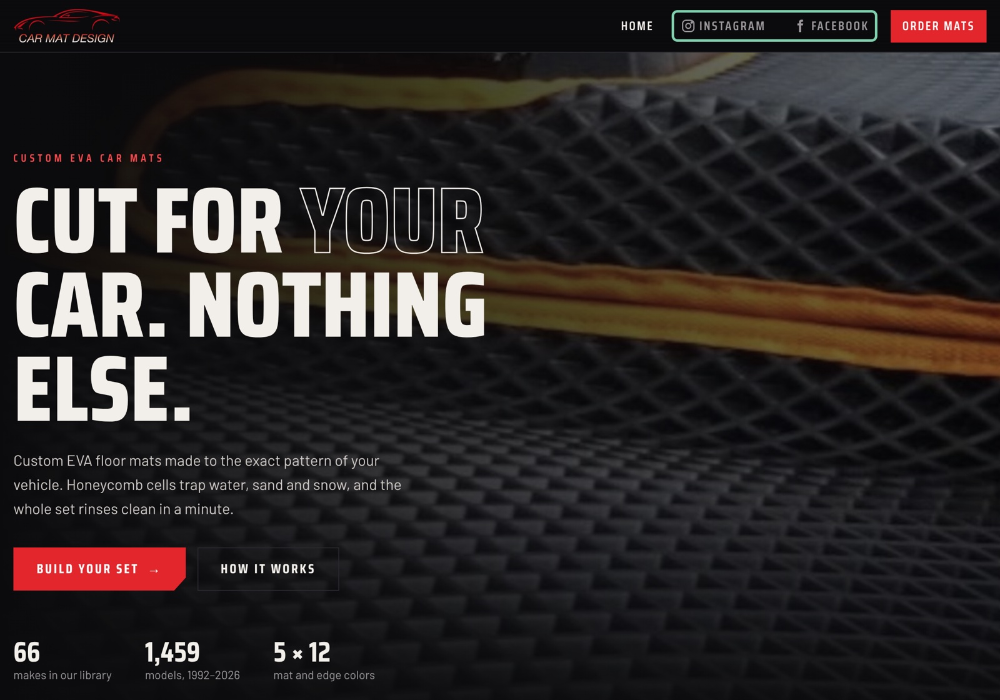
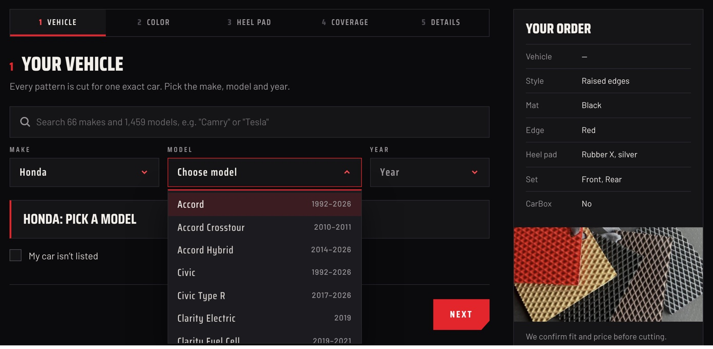
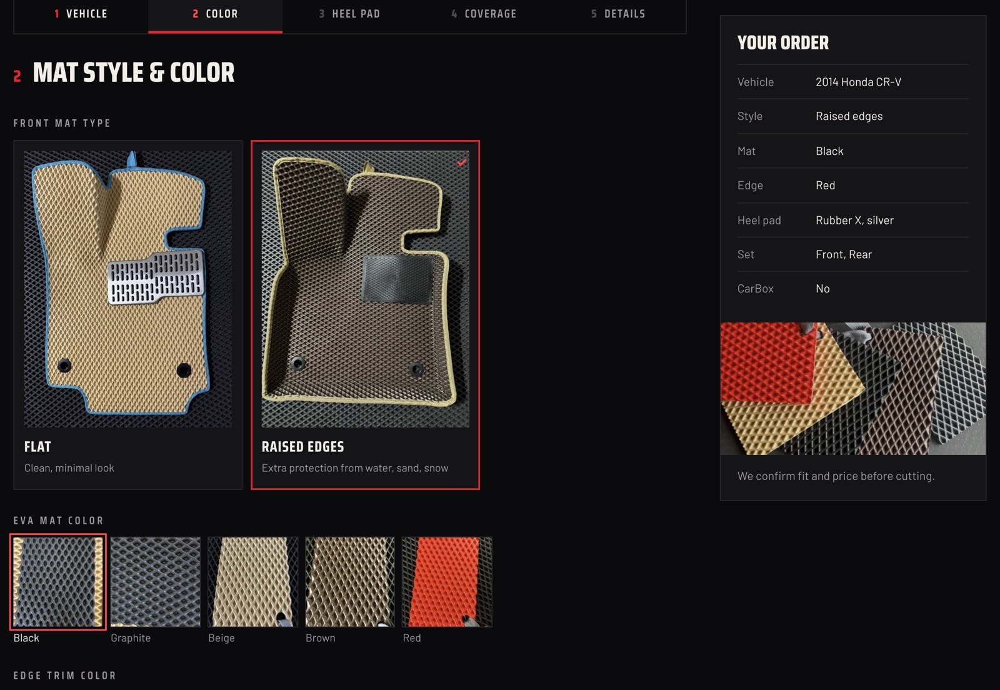
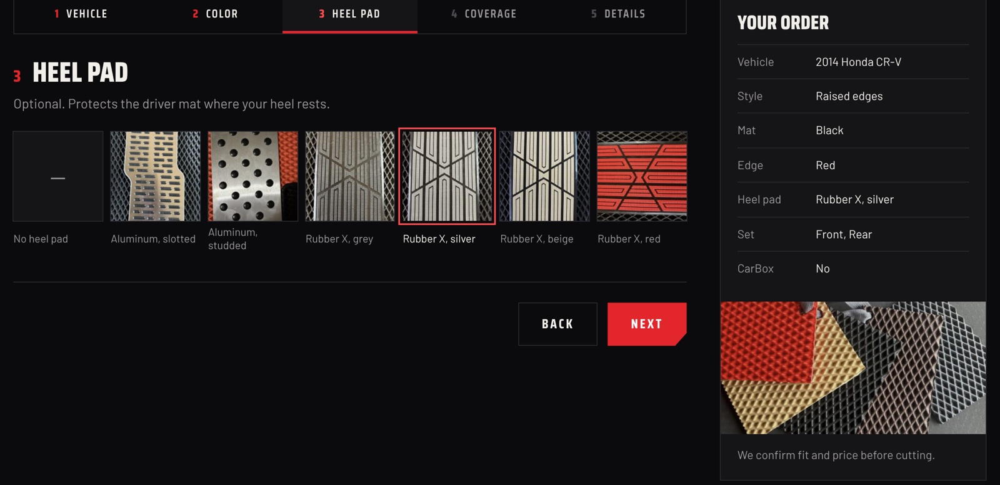
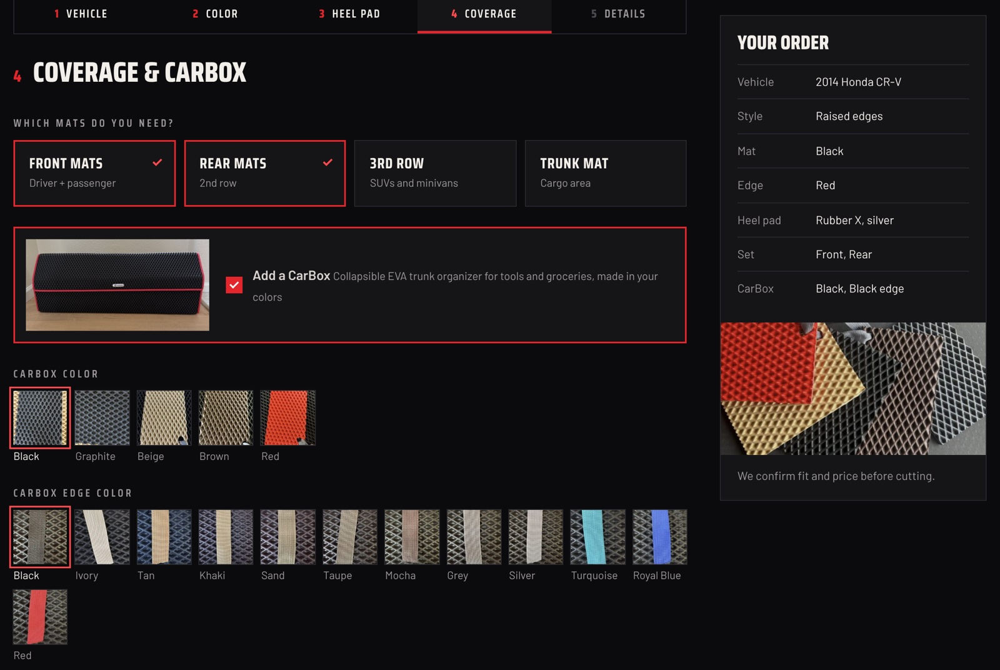
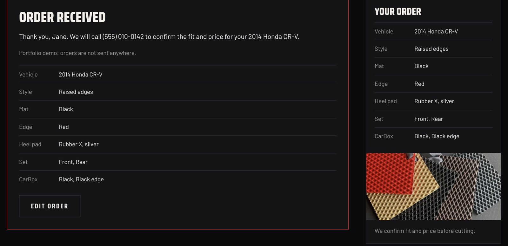

CarMat Website
A real client project, in development now: a website with a custom order flow for Car Mat Design, a maker of custom-fit EVA car mats. I designed it, styled every screen, planned the architecture and built it with Claude.
This page and the live concept show the site only: no prices, no stock and no client contacts. The order form is a demo and sends nothing. The client’s contacts and links will be added after the project is finished and the real site is live.

Every car is different, and the order has to show it
The maker cuts every set to the pattern of one exact car. So the order can’t be a shopping cart with fixed products: the customer has to name their car first, then build the set from this maker’s own materials. The site is made for this one workshop, not adapted from a template.
No gallery to maintain: the social pages already are one
The owner already posts a lot about their work on Instagram and Facebook, so that content exists and stays fresh. A second gallery on the site would repeat it and go out of date the first week nobody updates it. Instead, Instagram and Facebook sit right in the main menu, and the site focuses on what social media can’t do: a clear order for one exact car.

Five steps, built around one car
Vehicle, colour, heel pad, coverage, details. A “Your order” summary stays beside the steps and updates with every choice, so the customer always sees what they are building.
1 · The car comes first
Pick a make and the model list shows only that brand’s models, each with the years it was made; pick a model and only its years are offered. A search box finds any of 66 makes and 1,459 models by name. If a car is missing, “My car isn’t listed” lets the customer describe it instead of leaving.

2 · This maker’s materials, shown as photos
Mat style, EVA colour and edge trim are real photos of the maker’s own mats, not generic colour dots, so the customer sees the texture they will get.



3 · Easy to change, before and after sending
The customer can go back to any step without losing their choices, and “Edit order” reopens the whole set after it’s sent. Prices aren’t shown on purpose: every car pattern is different, so the maker calls back to confirm fit and price before cutting.

Content the owner can change without a redesign
Options in one file
Mat colours, edge trims, heel pads and sets live in a single data file, so new materials can be added or removed without touching the layout.
A local car library
An open US car-model dataset, cleaned into one file with makes, models and years. The picker works offline, with no external API.
Small React parts
The vehicle picker, option pickers and order steps are separate components, built with Vite into a static site that any host can serve.
Design, review, adjust, repeat
I designed the look and the order flow, planned how the site is put together and built it with Claude, reviewing and testing every step myself. The site grows in rounds: I share a version, the owner reviews it, and their notes become the next list of changes.